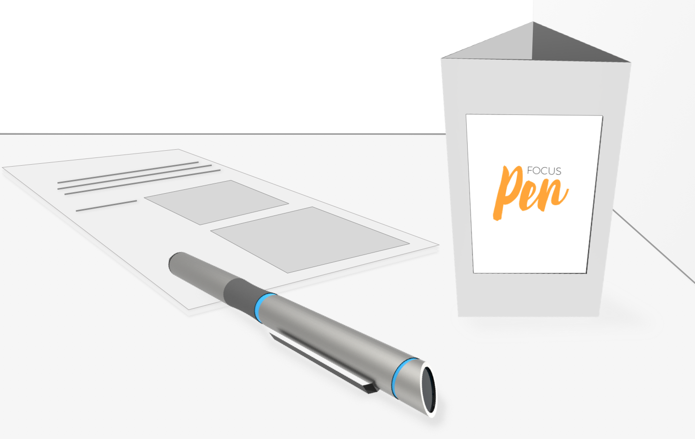
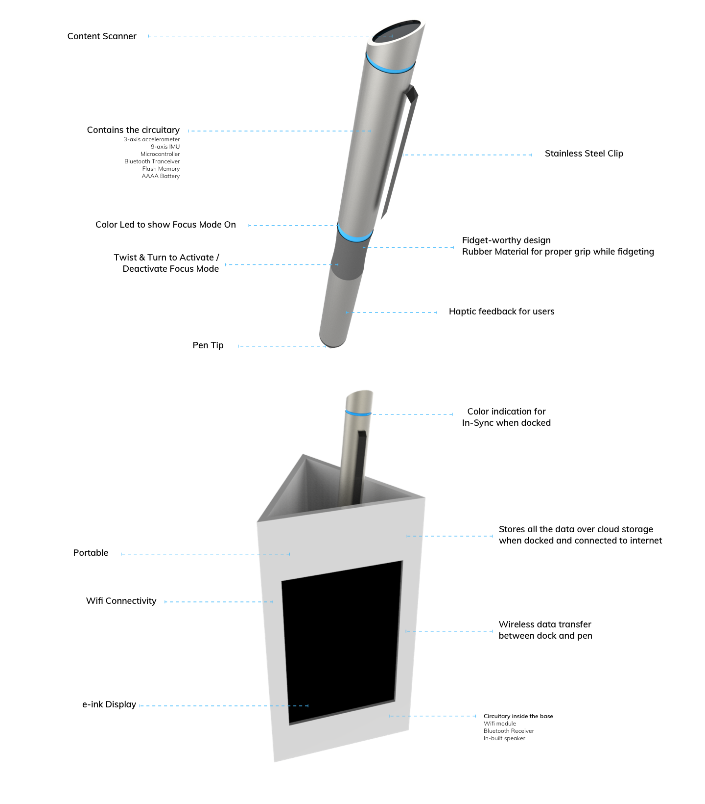
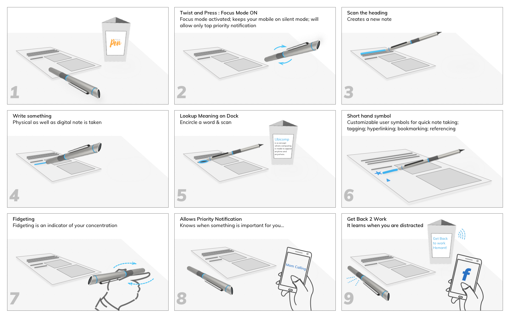
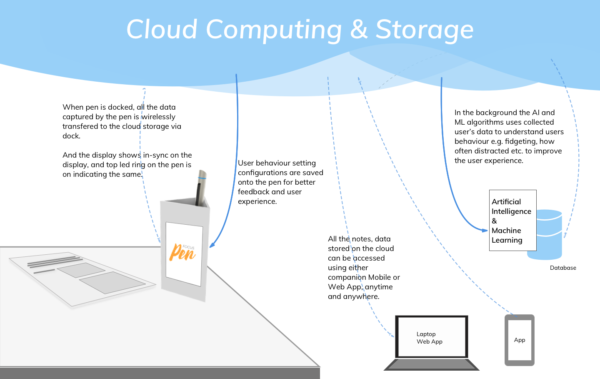
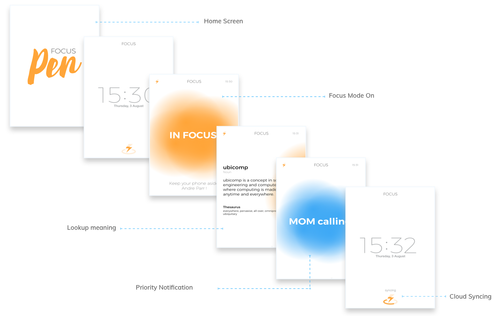

The Focus Pen
An IoT solution for Future of Digital Note Taking.

About The Project
The project is the outcome of a classroom project in Ubiquitous Computing module, in July 2017, of a duration of 3 weeks, at the National Institute of Design - Bengaluru, India.
As a part of the curriculum, the students were required to read a lot of
research papers as reading material to build an understanding of what Ubiquitous means?
We observed that most of the classmates spoke about the struggle and frustrations; at maintaining
focus and being constantly zoned out while comprehending the information in those materials.
Bro! I can not read through the papers, I am getting zoned out every now and then while reading them.
The Problem
Not being able to maintain FOCUS and comprehend the information available in printed reading materials by the students / researchers.Final Deliverable
A design research paper on this project documenting the process and the findings, has been accepted by SIDeR'18 (Student Interaction Design Research) conference. You can view the paper by clicking the button below.
My Team and My Role

From left to right: Andre Parr, Hemant Gupta and Akshay Khurana.
We were a team of 3 students from Interaction Design : Akshay, Andre and I - who had different strengths in 3D modelling, graphic design and user research respectively.
In this project my roles and responsibilities were
- observing user behaviour which resulted into identifying the lack of focus as a pain point;
- taking care of the user research which covered conducting user interviews
- planning and executing the user experiments
- helped in building the physical prototype (explored different materials: Bamboo, MDF, Acryllic etc)
- contributed in storyboarding and shooting of the use-case scenario video
Working with this team helped all of us to learn from each other's strengths.
Understanding
We started off with initial discussions amongst ourselves to build an understanding of
- What is Ubiquitous Computing (or Ubicomp)? and
- What could be the desired product to qualify as a ubicomp product?
We found ubicomp is an IoT concept which enables computing by taking inputs from anywhere, at anytime, using any device and outputs data in any format necessary.
While looking for answers to what could be an ideal device to solve the problem at hand, we realised that a pen / pencil is the most versatile and widely used object in the context i.e while studying. Users generally used pen / pencil for taking notes, making annotations, traversing between lines while reading, or just to fidget.
Therefore, we thought of rethinking the idea of note taking and research by reimagining the pen as a connected device.

Whiteboard discussions.
Our Approach
Since, this particular module was for a small duration of 3 weeks only therefore we decided to make use of following steps :
- Design and conduct an user experiment (in a controlled environment )
- Identifying pain / gain points of using pen or pencils from above experiment study
- Quick prototyping
- Feedback and Iterate
The user experiement was designed in such a way that it comprised of 2-3 primary research methods:
- Personal Interviews
- Contextual Inquiry (in a controlled environment)
- Observations
In which we invited various students from different departments of our college as participants.

User experiment designed & conducted by Hemant; sessions recorded by Akshay & Andre.
Observations / InsightsBased on the experiment study conducted in a controlled environment, following observations were made: (important ones are emphasised)
- Some users don’t want to defile the document
- Puts pen back in its dedicated space
- Fidgeting speed relative to concentration

- Google search on mobile used to look up words
- Some use a notebook/some write in the margins for note-taking
- Mobile phone is a major distraction
- Preference of pencil is observed among most users
- Use the pen to traverse the reading
- One user used sticky notes
Quick Prototyping
To get a better understanding of form factor of a pen / penci, we dicided to design / sketch different pen forms which could take care of the insights discovered from our primary research. We made 9 pen prototypes using bamboo, and went back to our users (in this case, students) to see their reactions and use behavior with new forms.


Sketches by Andre; prototypes made by Akshay, Andre and Hemant.
Feedbacks and IterateAfter few discussions with our primary users (students / researchers), we presented our concept to faculties and seeked their feedback. All these excercises helped us iterate and decide upon the final form of the pen and also made us realise the need for a companion dock.

We then proceeded with mind-mapping of the various components and features that the proposed product should have.

Made using Coggle. [Please zoom-in to view the map clearly.]
Our Solution : The Focus Pen + Companion Dock
Product's Details  Tangible User Interactions : How to use? Data flow in ecosystem
 Information Architechture & UI Design
We also designed the companion mobile and web application, but because of the want of time made a few screens to communicate the idea of how it would look.
Credits: UI screens by Andre.
The complete information architechture and new design of the application screens is yet to be uploaded.[work in progress]
However, if you wish to see then existed UI and an overview about Focus Pen, then please visit our project on behance where Andre Parr has done a great job at presenting the product in concise manner.
Key Takeaways
- Learnt a great deal while planning and executing an user experiment (that too in a controlled environment);
- Asking for participants' timeslot well in advance
- Making sure the experiements are timebound, and effective
- Camera angles while recording these kind of sessions
- improvising on the spot to get instantaneous user reactions
- Having team members having different strengths, I feel my visual aesthetic sense has improved a great deal.
- I realised what is the importance of thorough secondary research; we could not find any product similar to ours in terms of features and use cases. However, later I came across "NoteOn Smartpen" project by Nick Ames, who had already made a prototype of a smart pen.
- Building bamboo pen forms and companion dock(with MDF & Acryllic) was a great experience of material understanding.
- Learned from our mistakes and success while making the video prototype from storyboarding, screen framing, lighting and camera shots.